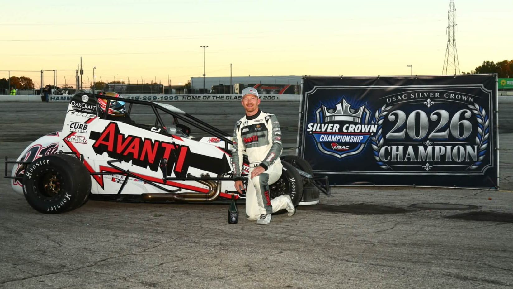

C.J. Leary Wins 2026 USAC Silver Crown Title With Three Wins and a Record Top-Five Streak
The Greenfield, Ind., driver clinched at Eldora with one race left and finished 105 points ahead of Briggs Danner and Justin Grant in the No. 21 Team AZ/Petty-Rossi/Curb-Agajanian Racing car.

C.J. Leary of Greenfield, Ind., clinched his first USAC Silver Crown championship on Sept. 26 at Eldora Speedway in Rossburg, Ohio, by finishing fifth in the 4-Crown Nationals with one race remaining, USAC reported. He finished the season with 662 points, 105 ahead of Briggs Danner and Justin Grant, who tied at 557; Danner took second on the tiebreaker of most feature wins. The title is Leary’s second USAC national championship after the 2019 USAC AMSOIL National Sprint Car crown. It is also the first USAC Silver Crown entrant title for Team AZ Racing/Petty-Rossi/Curb-Agajanian, which fields the Avanti Windows & Doors No. 21.
Leary led the points after every round except the opener, which Hayden Reinbold won in his first Silver Crown start at the Kansas State Fairgrounds on May 9. Leary won on June 7 at WWT Raceway in Madison, Ill., where the feature was stopped at 65 laps instead of 66 because of time constraints and he led the final 45. He won again on Aug. 8 at Iowa Speedway in his first visit to the track, and on Sept. 5 he led all 100 laps of the Ted Horn 100 at the Du Quoin State Fairgrounds, his second straight win there and eighth career Silver Crown victory, according to USAC.
USAC’s season review credits Leary with a series-high 204 laps led, nine top-five finishes in 10 rounds and no finish worse than eighth. His team completed all 911 laps contested in 2026, the series said. His top-five streak reached 15 consecutive Silver Crown races at Eldora, a series record that passed the 13 set by Chris Windom (2015–17) and Kody Swanson (2016–17), USAC said after Du Quoin. Leary finished eighth in the Oct. 3 finale at Toledo Speedway, which Danner won for his third victory of the season. Danner and Leary tied for the most wins in 2026.
Leary made his Silver Crown debut in 2014, ran the full schedule in 2015 in the family-owned No. 30 and was the series’ 2015 Rookie of the Year. His first Silver Crown win came in 2016 at the Terre Haute Action Track. USAC said he and his father, Chuck Leary, became the first father and son to win USAC Silver Crown races as drivers. His other wins before 2026 came in 2018 at Eldora, in 2022, and twice in 2025, on pavement at Lucas Oil Indianapolis Raceway Park and on the dirt at Du Quoin, according to USAC’s driver profile. Before this year he had finished third, fourth, fourth and second in the points over the previous four seasons.
Leary joined Team AZ Racing/Petty-Rossi/Curb-Agajanian for 2025 after leaving his previous ride following the 2024 season. USAC reported that Chuck Leary, who was also his crew chief, died unexpectedly in March 2025 at age 59. “Losing my dad was the hardest thing I’ve ever endured and I still struggle with it today,” Leary told USAC, adding that he wished his father could have seen the title season. Leary credited the team’s reliability: “Over half the battle of Silver Crown racing is making sure that your car runs the full 100 laps and finishes the races.” USAC reported that he and his wife, Kristy, are expecting a son in early 2027.
The final top five in points was Leary, Danner, Grant, Mario Clouser (487) and Gregg Cory (388). Chelby Hinton, who finished eighth, was named Rookie of the Year, edging Reinbold by eight points. Grant, who entered 2026 as the defending champion, led the most laps at the Kansas State Fairgrounds and the Illinois State Fairgrounds in Springfield but did not win a Silver Crown race this season.